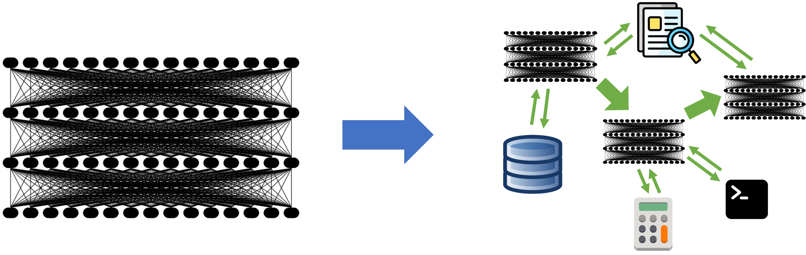

篇首导读
2023 年所有人都在盯着“模型”：更大的 LLM、更强的能力。这篇文章提出一个当时反直觉、后来被反复验证的判断：最先进的 AI 结果越来越多来自“复合 AI 系统”——由多次模型调用、检索器、工具、代码执行器等多个组件构成的系统，而不是单一模型。
作者给出四个理由（系统设计比堆算力更划算、系统能接入动态数据、系统更可控可验证、不同应用需要不同成本/质量组合），然后展开复合系统的设计空间、三大挑战（设计、优化、运维）和对应的新兴工具（LangChain、DSPy、FrugalGPT、LangSmith 等）。
怎么读：这是第一周的概念地图。先看四个理由和设计空间表格，建立“系统 > 模型”的直觉；三大挑战里的“优化”和“运维”会在后面 DSPy、评估、可观测性几讲反复出现。术语卡先扫一遍，正文里遇到不熟的词再回来查。
术语卡
完整术语表 →- Compound AI System 复合 AI 系统
- 由多个相互作用组件（多次模型调用、检索器、工具、代码执行器等）构成的 AI 系统，与单一模型相对。
- AI Model AI 模型
- 这里的定义很窄：一个统计模型，例如预测下一个 token 的 Transformer。模型是复合系统里的一个零件。
- RAG 检索增强生成
- 先检索资料，再把资料放进提示里让模型生成答案。文中提到 60% 的企业 LLM 应用用了某种 RAG。
- CoT / Self-Consistency 思维链 / 自洽性
- 让模型写出中间推理步骤；多次采样后对答案做多数投票。两者都是“用更多推理计算换准确率”的复合策略。
- DSPy 声明式自我改进语言程序
- 把 LLM 流水线写成模块，由优化器自动选择提示、示例甚至权重，以最大化目标指标。
- FrugalGPT / AI Gateway 节俭 GPT / AI 网关
- 根据输入把请求路由到不同模型级联，在预算约束下最大化质量。AI 网关是这类路由器的工程化形态。
- LLMOps / DataOps LLM 运维 / 数据运维
- 对复合系统做监控、追踪、调试、数据质量管理。系统行为越复杂，越需要细粒度的 trace。
- System Design Space 系统设计空间
- 给定任务下所有可能的系统设计方案：选哪些模型、检索器、工具、控制流，以及如何在组件间分配资源。
引言
2023 年，大语言模型（LLM）通过提示就能完成翻译、编程等通用任务，吸引了所有人的注意。这自然让人们把模型视为 AI 应用开发的首要成分，大家都在猜测新一代 LLM 会带来什么能力。
然而，随着越来越多开发者开始用 LLM 构建应用，我们认为这种关注正在迅速改变：最先进的 AI 结果越来越多地来自由多个组件构成的复合系统，而不只是单一模型。
例如，Google 的 AlphaCode 2 通过一个精心设计的系统在编程任务上取得最先进结果：它用 LLM 为一个任务生成最多 100 万个候选解法，再逐步筛选。AlphaGeometry 同样把 LLM 与传统符号求解器结合，用来解决奥林匹克几何题。在企业界，我们在 Databricks 的同事发现，60% 的 LLM 应用使用了某种形式的检索增强生成（RAG），30% 使用了多步链。
即使在传统语言模型任务上，过去只报告单次 LLM 调用结果的研究者，现在也开始报告越来越复杂的推理策略：微软写过一种链式策略，在医学考试上比 GPT-4 的准确率高 9%；Google 的 Gemini 发布文章则用一种新的 CoT@32 推理策略来测量 MMLU 成绩，该策略会调用模型 32 次——这也引发了它与“只调用一次 GPT-4”如何比较的疑问。转向复合系统带来了许多有趣的设计问题，同时也令人兴奋：这意味着领先的 AI 结果可以通过巧妙的工程实现，而不只是扩大训练规模。
在这篇文章中，我们分析复合 AI 系统的趋势及其对 AI 开发者的意义。开发者为什么构建复合系统？随着模型进步，这种范式会持续存在吗？有哪些新兴工具可以用来开发和优化这类系统——这个领域的研究远少于模型训练。我们认为，复合 AI 系统很可能是未来最大化 AI 结果的最佳方式，也可能是 2024 年 AI 领域最有影响力的趋势之一。
越来越多的新 AI 成果来自复合系统。

查看本节英文原文
AI caught everyone’s attention in 2023 with Large Language Models (LLMs) that can be instructed to perform general tasks, such as translation or coding, just by prompting. This naturally led to an intense focus on models as the primary ingredient in AI application development, with everyone wondering what capabilities new LLMs will bring.
As more developers begin to build using LLMs, however, we believe that this focus is rapidly changing: state-of-the-art AI results are increasingly obtained by compound systems with multiple components, not just monolithic models.
For example, Google’s AlphaCode 2 set state-of-the-art results in programming through a carefully engineered system that uses LLMs to generate up to 1 million possible solutions for a task and then filter down the set. AlphaGeometry, likewise, combines an LLM with a traditional symbolic solver to tackle olympiad problems. In enterprises, our colleagues at Databricks found that 60% of LLM applications use some form of retrieval-augmented generation (RAG), and 30% use multi-step chains.
Even researchers working on traditional language model tasks, who used to report results from a single LLM call, are now reporting results from increasingly complex inference strategies: Microsoft wrote about a chaining strategy that exceeded GPT-4’s accuracy on medical exams by 9%, and Google’s Gemini launch post measured its MMLU benchmark results using a new CoT@32 inference strategy that calls the model 32 times, which raised questions about its comparison to just a single call to GPT-4. This shift to compound systems opens many interesting design questions, but it is also exciting, because it means leading AI results can be achieved through clever engineering, not just scaling up training.
In this post, we analyze the trend toward compound AI systems and what it means for AI developers. Why are developers building compound systems? Is this paradigm here to stay as models improve? And what are the emerging tools for developing and optimizing such systems—an area that has received far less research than model training? We argue that compound AI systems will likely be the best way to maximize AI results in the future, and might be one of the most impactful trends in AI in 2024.
Increasingly many new AI results are from compound systems.
为什么要用复合 AI 系统？
我们把复合 AI 系统定义为：使用多个相互作用组件来完成 AI 任务的系统，包括多次模型调用、检索器或外部工具。相比之下，AI 模型只是一个统计模型，例如预测文本中下一个 token 的 Transformer。
尽管 AI 模型不断变好，扩展也看不到明确的终点，但越来越多的最先进结果来自复合系统。为什么？我们观察到几个不同的原因：
- 有些任务通过系统设计更容易改进。 LLM 似乎遵循惊人的缩放定律，更多算力可预测地带来更好结果；但在许多应用中，扩展的性价比低于构建复合系统。例如，假设当前最好的 LLM 有 30% 的概率解决编程竞赛题，把训练预算增加到三倍只能把这个数字提到 35%——这仍然不够可靠，赢不了比赛。相反，设计一个多次采样、逐个测试的系统，可能用今天的模型就把性能提到 80%，AlphaCode 就是例子。更重要的是，迭代系统设计通常比等待训练运行快得多。我们相信，在任何高价值应用中，开发者都会想用上所有可用的工具来最大化 AI 质量，因此会在扩展之外使用系统思路。我们经常看到：一个好 LLM 能做出令人信服但极不可靠的第一版 demo，然后工程团队会系统性地把质量提上去。
- 系统可以是动态的。 机器学习模型受限于静态训练数据，其“知识”是固定的。因此开发者需要把模型与搜索、检索等组件结合，以纳入最新数据。此外，训练让模型“看到”整个训练集，所以要构建带访问控制的 AI 应用（例如只根据用户有权访问的文件回答问题），需要更复杂的系统。
- 用系统更容易提升控制与信任。 单靠神经网络很难控制：训练会影响它，但几乎无法保证模型避免某些行为。使用 AI 系统而不是模型，可以帮助开发者更紧地控制行为，例如过滤模型输出。同样，再好的 LLM 也会幻觉，但把 LLM 与检索结合的系统可以通过提供引用或自动核实事实来提升用户信任。
- 性能目标差异很大。 每个 AI 模型的质量和成本是固定的，但应用往往需要调整这些参数。在行内代码补全这类应用中，最好的 AI 模型太贵，所以 GitHub Copilot 这类工具使用精心调优的较小模型和各种搜索启发式来给出结果。在另一些应用中，即使 GPT-4 这样最大的模型也太便宜了！许多用户愿意为一个正确的法律意见付几美元，而不是问 GPT-4 的几美分，但开发者需要设计一个 AI 系统来利用这笔更大的预算。
生成式 AI 转向复合系统，也与其他 AI 领域（如自动驾驶）的行业趋势一致：大多数最先进的实现都是由多个专门组件构成的系统。基于这些原因，我们认为即使模型继续进步，复合 AI 系统仍将是领先范式。
查看本节英文原文
We define a Compound AI System as a system that tackles AI tasks using multiple interacting components, including multiple calls to models, retrievers, or external tools. In contrast, an AI Model is simply a statistical model, e.g., a Transformer that predicts the next token in text.
Even though AI models are continually getting better, and there is no clear end in sight to their scaling, more and more state-of-the-art results are obtained using compound systems. Why is that? We have seen several distinct reasons:
- Some tasks are easier to improve via system design. While LLMs appear to follow remarkable scaling laws that predictably yield better results with more compute, in many applications, scaling offers lower returns-vs-cost than building a compound system. For example, suppose that the current best LLM can solve coding contest problems 30% of the time, and tripling its training budget would increase this to 35%; this is still not reliable enough to win a coding contest! In contrast, engineering a system that samples from the model multiple times, tests each sample, etc. might increase performance to 80% with today’s models, as shown in work like AlphaCode. Even more importantly, iterating on a system design is often much faster than waiting for training runs. We believe that in any high-value application, developers will want to use every tool available to maximize AI quality, so they will use system ideas in addition to scaling. We frequently see this with LLM users, where a good LLM creates a compelling but frustratingly unreliable first demo, and engineering teams then go on to systematically raise quality.
- Systems can be dynamic. Machine learning models are inherently limited because they are trained on static datasets, so their “knowledge” is fixed. Therefore, developers need to combine models with other components, such as search and retrieval, to incorporate timely data. In addition, training lets a model “see” the whole training set, so more complex systems are needed to build AI applications with access controls (e.g., answer a user’s questions based only on files the user has access to).
- Improving control and trust is easier with systems. Neural network models alone are hard to control: while training will influence them, it is nearly impossible to guarantee that a model will avoid certain behaviors. Using an AI system instead of a model can help developers control behavior more tightly, e.g., by filtering model outputs. Likewise, even the best LLMs still hallucinate, but a system combining, say, LLMs with retrieval can increase user trust by providing citations or automatically verifying facts.
- Performance goals vary widely. Each AI model has a fixed quality level and cost, but applications often need to vary these parameters. In some applications, such as inline code suggestions, the best AI models are too expensive, so tools like Github Copilot use carefully tuned smaller models and various search heuristics to provide results. In other applications, even the largest models, like GPT-4, are too cheap! Many users would be willing to pay a few dollars for a correct legal opinion, instead of the few cents it takes to ask GPT-4, but a developer would need to design an AI system to utilize this larger budget.
The shift to compound systems in Generative AI also matches the industry trends in other AI fields, such as self-driving cars: most of the state-of-the-art implementations are systems with multiple specialized components. For these reasons, we believe compound AI systems will remain a leading paradigm even as models improve.
开发复合 AI 系统
复合 AI 系统能带来明显好处，但设计、优化和运营它们的技艺仍在形成中。表面上看，AI 系统是传统软件与 AI 模型的组合，但其中有许多有趣的设计问题。例如，整体的“控制逻辑”应该用传统代码写（例如调用 LLM 的 Python 代码），还是由 AI 模型驱动（例如调用外部工具的 LLM 智能体）？同样，在复合系统中，开发者应该把资源投在哪里——例如在 RAG 流水线中，是把更多 FLOPS 花在检索器还是 LLM 上，甚至多次调用 LLM？最后，我们如何像训练神经网络那样，端到端地优化由离散组件构成的 AI 系统，以最大化某个指标？本节先介绍几个 AI 系统示例，然后讨论这些挑战与近期研究。
AI 系统设计空间
下面是几个近期的复合 AI 系统，用来展示设计选择的广度：
| 系统 | 组件 | 设计 | 结果 |
|---|---|---|---|
| AlphaCode 2 | 用于采样和评分程序的微调 LLM；代码执行模块；聚类模型 | 为一个编程问题生成最多 100 万个解法，再筛选和评分 | 在编程竞赛中达到人类第 85 百分位 |
| AlphaGeometry | 微调 LLM；符号数学引擎 | LLM 迭代提出几何构造，符号引擎检查推导出的事实 | 在限时测试中达到国际数学奥林匹克银牌到金牌之间 |
| Medprompt | GPT-4；正确答案示例库的最近邻搜索；LLM 生成的思维链示例；多次采样与集成 | 搜索相似示例构造少样本提示，为每个示例加入模型生成的思维链，生成并评判最多 11 个解法 | 优于 Med-PaLM 等专用医学模型（在更简单的提示策略下） |
| Gemini on MMLU | Gemini LLM；自定义推理逻辑 | CoT@32 策略对 MMLU 采样 32 条思维链答案，若足够多一致则返回首选，否则退回无思维链生成 | MMLU 90.04%，对比 GPT-4 5-shot 86.4%、Gemini 5-shot 83.7% |
| ChatGPT Plus | LLM；网页浏览插件；执行 Python 的代码解释器；DALL-E 图像生成器 | 可调用网页浏览等工具回答问题；由 LLM 在回答过程中决定何时、如何调用每个工具 | 拥有数百万付费订阅者的热门消费级 AI 产品 |
| RAG / ORQA / Bing / Baleen 等 | LLM（有时多次调用）；检索系统 | 以多种方式把 LLM 与检索系统结合，例如让 LLM 生成搜索查询，或直接检索当前上下文 | 搜索引擎与企业应用中广泛使用的技术 |
查看本节英文原文
While compound AI systems can offer clear benefits, the art of designing, optimizing, and operating them is still emerging. On the surface, an AI system is a combination of traditional software and AI models, but there are many interesting design questions. For example, should the overall “control logic” be written in traditional code (e.g., Python code that calls an LLM), or should it be driven by an AI model (e.g. LLM agents that call external tools)? Likewise, in a compound system, where should a developer invest resources—for example, in a RAG pipeline, is it better to spend more FLOPS on the retriever or the LLM, or even to call an LLM multiple times? Finally, how can we optimize an AI system with discrete components end-to-end to maximize a metric, the same way we can train a neural network? In this section, we detail a few example AI systems, then discuss these challenges and recent research on them.
Below are few recent compound AI systems to show the breadth of design choices. The table lists AlphaCode 2, AlphaGeometry, Medprompt, Gemini on MMLU, ChatGPT Plus, and RAG/ORQA/Bing/Baleen, with their components, designs, and results.
关键挑战
与 AI 模型相比，复合 AI 系统在设计、优化和运营上提出了新的挑战。
设计空间
给定任务的可能系统设计范围极其庞大。例如，即使在“检索器 + 语言模型”的简单 RAG 情形中，也有：(i) 许多检索模型和语言模型可选；(ii) 其他提升检索质量的技术，如查询扩展或重排序模型；(iii) 提升 LLM 生成输出的技术（例如再跑一个 LLM，检查输出是否与检索段落相关）。开发者必须探索这个巨大空间才能找到好设计。
此外，开发者需要在系统组件之间分配有限资源，如延迟和成本预算。例如，如果你想在 100 毫秒内回答 RAG 问题，应该把 20 毫秒给检索器、80 毫秒给 LLM，还是反过来？
优化
在机器学习中，最大化复合系统的质量往往需要联合优化各组件，让它们协同工作。例如，考虑一个简单的 RAG 应用：LLM 看到用户问题，生成搜索查询发给检索器，然后生成答案。理想情况下，LLM 应该被调优为生成“对该检索器好用”的查询，检索器也应该被调优为偏好“对该 LLM 好用”的答案。
在 PyTorch 式的单模型开发中，用户可以轻松端到端优化模型，因为整个模型可微。但复合 AI 系统包含搜索引擎、代码解释器等不可微组件，因此需要新的优化方法。优化复合系统仍是一个新研究领域；例如 DSPy 为预训练 LLM 与其他组件的流水线提供了通用优化器，而 LaMDA、Toolformer 和 AlphaGeometry 等系统则在模型训练期间使用工具调用，以针对这些工具优化模型。
运维
机器学习运维（MLOps）对复合 AI 系统更具挑战。例如，传统 ML 模型（如垃圾邮件分类器）很容易追踪成功率，但开发者应该如何追踪和调试一个 LLM 智能体在同一任务上的表现？它可能使用数量不定的“反思”步骤或外部 API 调用来分类一条消息。我们认为会出现新一代 MLOps 工具来解决这些问题。有趣的问题包括：
- 监控：开发者如何最有效地记录、分析和调试复杂 AI 系统的轨迹？
- DataOps：许多 AI 系统涉及向量数据库等数据服务组件，其行为依赖所服务数据的质量，因此运维还应覆盖数据管道。
- 安全：研究表明，复合 AI 系统（例如带内容过滤器的 LLM 聊天机器人）相比单个模型可能带来意想不到的安全风险。需要新工具来保护这些系统。
查看本节英文原文
Compound AI systems pose new challenges in design, optimization and operation compared to AI models.
Design Space. The range of possible system designs for a given task is vast. For example, even in the simple case of retrieval-augmented generation (RAG) with a retriever and language model, there are: (i) many retrieval and language models to choose from, (ii) other techniques to improve retrieval quality, such as query expansion or reranking models, and (iii) techniques to improve the LLM’s generated output (e.g., running another LLM to check that the output relates to the retrieved passages). Developers have to explore this vast space to find a good design.
In addition, developers need to allocate limited resources, like latency and cost budgets, among the system components. For example, if you want to answer RAG questions in 100 milliseconds, should you budget to spend 20 ms on the retriever and 80 on the LLM, or the other way around?
Optimization. Often in ML, maximizing the quality of a compound system requires co-optimizing the components to work well together. For example, consider a simple RAG application where an LLM sees a user question, generates a search query to send to a retriever, and then generates an answer. Ideally, the LLM would be tuned to generate queries that work well for that particular retriever, and the retriever would be tuned to prefer answers that work well for that LLM.
In single model development a la PyTorch, users can easily optimize a model end-to-end because the whole model is differentiable. However, compound AI systems contain non-differentiable components like search engines or code interpreters, and thus require new methods of optimization. Optimizing these compound AI systems is still a new research area; for example, DSPy offers a general optimizer for pipelines of pretrained LLMs and other components, while others systems, like LaMDA, Toolformer and AlphaGeometry, use tool calls during model training to optimize models for those tools.
Operation. Machine learning operations (MLOps) become more challenging for compound AI systems. For example, while it is easy to track success rates for a traditional ML model like a spam classifier, how should developers track and debug the performance of an LLM agent for the same task, which might use a variable number of “reflection” steps or external API calls to classify a message? We believe that a new generation of MLOps tools will be developed to tackle these problems. Interesting problems include monitoring, DataOps, and security.
新兴范式
为了应对构建复合 AI 系统的挑战，工业界和研究界正在涌现多种新方法。我们重点介绍几种最常用的方法，以及我们研究中应对这些挑战的例子。
设计 AI 系统：组合框架与策略。许多开发者现在使用“语言模型编程”框架，用多次 AI 模型调用和其他组件来构建应用。这包括从传统程序调用的组件库（如 LangChain、LlamaIndex）、让 LLM 驱动应用的智能体框架（如 AutoGPT、BabyAGI），以及控制 LM 输出的工具（如 Guardrails、Outlines、LMQL、SGLang）。与此同时，研究者正在开发大量新的推理策略，用模型和工具调用来生成更好的输出，例如思维链、自洽性、WikiChat、RAG 等。
自动优化质量：DSPy。DSPy 来自学术界，是第一个旨在优化“由 LLM 调用和其他工具组成的系统”以最大化目标指标的框架。用户用 LLM 和其他工具调用写出应用，并提供目标指标（如验证集准确率），DSPy 会自动为每个模块创建提示指令、少样本示例和其他参数选择，以最大化端到端性能。效果类似于在 PyTorch 中端到端优化多层神经网络，只是 DSPy 的模块不总是可微层。为此，DSPy 以干净的方式利用 LLM 的语言能力：用户为每个模块写自然语言签名，例如 user_question -> search_query，输入输出字段名有意义，DSPy 自动把它变成合适的提示、指令、少样本示例，甚至对底层语言模型做权重更新。
优化成本：FrugalGPT 与 AI 网关。可用的 AI 模型和服务范围很广，为应用挑选合适的模型很困难。而且不同模型在不同输入上表现可能不同。FrugalGPT 是一个自动把输入路由到不同模型级联的框架，在目标预算下最大化质量。基于一小套示例，它学习一种路由策略，在同等成本下比最好的 LLM 服务高出最多 4%，或在保持质量的同时把成本降低最多 90%。FrugalGPT 是更广泛的“AI 网关/路由器”概念的例证，相关软件包括 Databricks AI Gateway、OpenRouter 和 Martian，用于优化 AI 应用各组件的性能。当 AI 任务被拆成更小的模块化步骤时，这些系统效果更好，网关可以为每个步骤分别优化路由。
运维：LLMOps 与 DataOps。AI 应用一直需要仔细监控模型输出和数据管道才能可靠运行。但在复合 AI 系统中，系统在每个输入上的行为可能复杂得多，因此追踪应用采取的每一步和中间输出很重要。LangSmith、Phoenix Traces、Databricks Inference Tables 等软件可以细粒度地追踪、可视化和评估这些输出，有些还能把它们与数据管道质量和下游指标关联起来。在研究界，DSPy Assertions 试图把监控检查的反馈直接用于改进 AI 系统输出；MT-Bench、FAVA、ARES 等基于 AI 的质量评估方法则旨在自动化质量监控。
查看本节英文原文
To tackle the challenges of building compound AI systems, multiple new approaches are arising in the industry and in research. We highlight a few of the most widely used ones and examples from our research on tackling these challenges.
Designing AI Systems: Composition Frameworks and Strategies. Many developers are now using “language model programming” frameworks that let them build applications out of multiple calls to AI models and other components. These include component libraries like LangChain and LlamaIndex that developers call from traditional programs, agent frameworks like AutoGPT and BabyAGI that let an LLM drive the application, and tools for controlling LM outputs, like Guardrails, Outlines, LMQL and SGLang. In parallel, researchers are developing numerous new inference strategies to generate better outputs using calls to models and tools, such as chain-of-thought, self-consistency, WikiChat, RAG and others.
Automatically Optimizing Quality: DSPy. Coming from academia, DSPy is the first framework that aims to optimize a system composed of LLM calls and other tools to maximize a target metric. Users write an application out of calls to LLMs and other tools, and provide a target metric such as accuracy on a validation set, and then DSPy automatically tunes the pipeline by creating prompt instructions, few-shot examples, and other parameter choices for each module to maximize end-to-end performance. The effect is similar to end-to-end optimization of a multi-layer neural network in PyTorch, except that the modules in DSPy are not always differentiable layers. To do that, DSPy leverages the linguistic abilities of LLMs in a clean way: to specify each module, users write a natural language signature, such as user_question -> search_query, where the names of the input and output fields are meaningful, and DSPy automatically turns this into suitable prompts with instructions, few-shot examples, or even weight updates to the underlying language models.
Optimizing Cost: FrugalGPT and AI Gateways. The wide range of AI models and services available makes it challenging to pick the right one for an application. Moreover, different models may perform better on different inputs. FrugalGPT is a framework to automatically route inputs to different AI model cascades to maximize quality subject to a target budget. Based on a small set of examples, it learns a routing strategy that can outperform the best LLM services by up to 4% at the same cost, or reduce cost by up to 90% while matching their quality. FrugalGPT is an example of a broader emerging concept of AI gateways or routers, implemented in software like Databricks AI Gateway, OpenRouter, and Martian, to optimize the performance of each component of an AI application. These systems work even better when an AI task is broken into smaller modular steps in a compound system, and the gateway can optimize routing separately for each step.
Operation: LLMOps and DataOps. AI applications have always required careful monitoring of both model outputs and data pipelines to run reliably. With compound AI systems, however, the behavior of the system on each input can be considerably more complex, so it is important to track all the steps taken by the application and intermediate outputs. Software like LangSmith, Phoenix Traces, and Databricks Inference Tables can track, visualize and evaluate these outputs at a fine granularity, in some cases also correlating them with data pipeline quality and downstream metrics. In the research world, DSPy Assertions seeks to leverage feedback from monitoring checks directly in AI systems to improve outputs, and AI-based quality evaluation methods like MT-Bench, FAVA and ARES aim to automate quality monitoring.
结论
生成式 AI 通过自然语言提示解锁了广泛能力，让每位开发者兴奋。然而，当开发者希望超越 demo、最大化 AI 应用质量时，他们越来越多地转向复合 AI 系统，把它作为控制和增强 LLM 能力的自然方式。如何开发复合 AI 系统的最佳实践仍是开放问题，但已经有令人兴奋的方法来辅助设计、端到端优化和运维。我们相信，复合 AI 系统将继续是最大化 AI 应用质量与可靠性的最佳方式，也可能是 2024 年 AI 领域最重要的趋势之一。
查看本节英文原文
Generative AI has excited every developer by unlocking a wide range of capabilities through natural language prompting. As developers aim to move beyond demos and maximize the quality of their AI applications, however, they are increasingly turning to compound AI systems as a natural way to control and enhance the capabilities of LLMs. Figuring out the best practices for developing compound AI systems is still an open question, but there are already exciting approaches to aid with design, end-to-end optimization, and operation. We believe that compound AI systems will remain the best way to maximize the quality and reliability of AI applications going forward, and may be one of the most important trends in AI in 2024.
要点回顾
- 复合 AI 系统 = 多次模型调用 + 检索器 + 工具 + 外部组件；模型只是其中一个零件。
- 四个理由：系统设计比堆算力更划算、系统能接入动态数据、系统更可控可验证、不同应用需要不同成本/质量组合。
- 设计空间巨大：组件选择、资源分配、控制流由代码还是 LLM 决定。
- 三大挑战：设计空间探索、不可微组件的端到端优化、复杂行为的运维与安全。
- 对应工具：LangChain / LlamaIndex / AutoGPT、DSPy、FrugalGPT / AI 网关、LangSmith / Phoenix / Inference Tables。
- 这篇文章是课程的概念地图；后面的 RAG、工具调用、DSPy、评估，都是在展开这里的某一格。